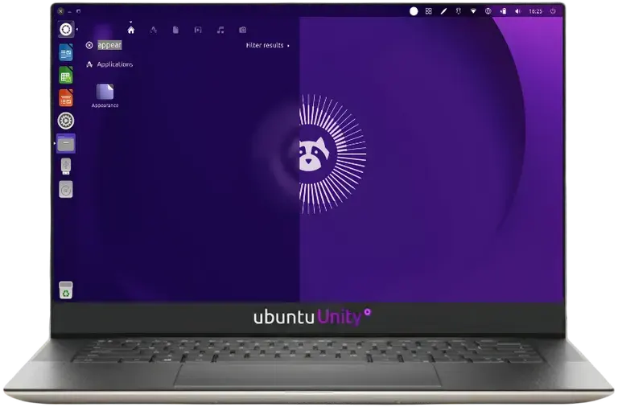
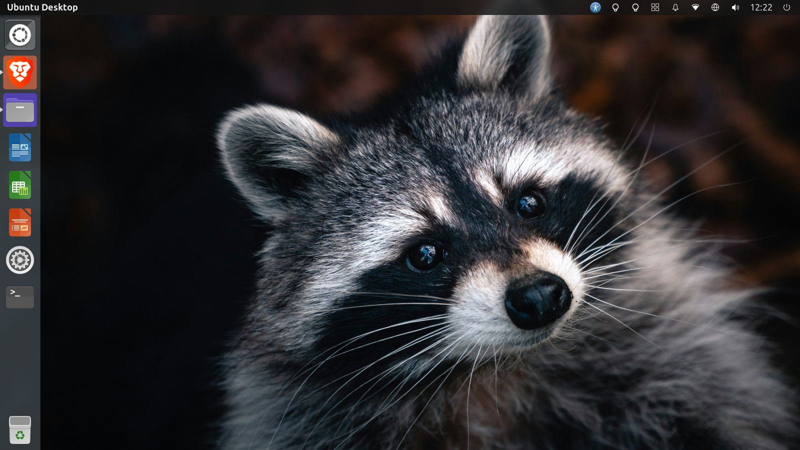
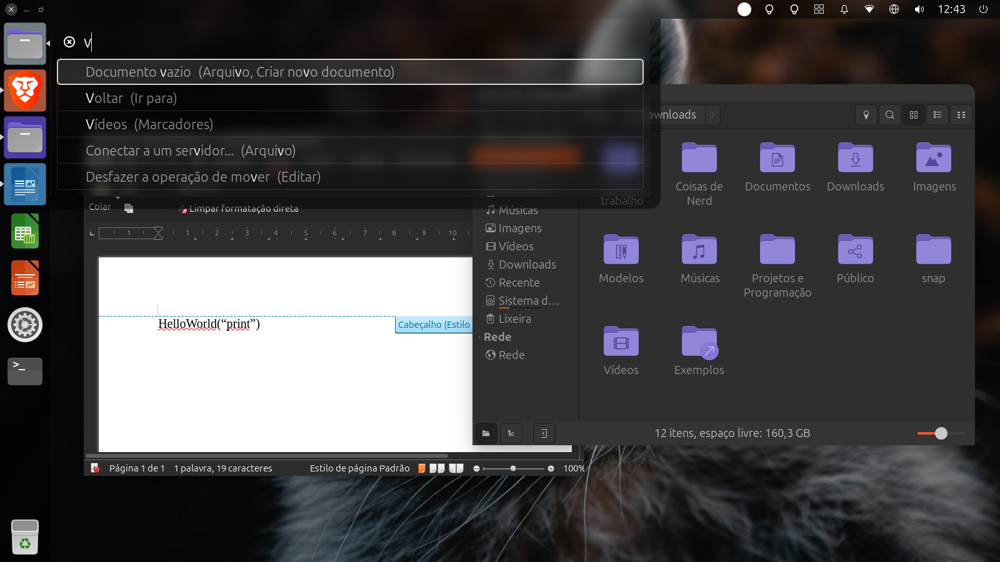
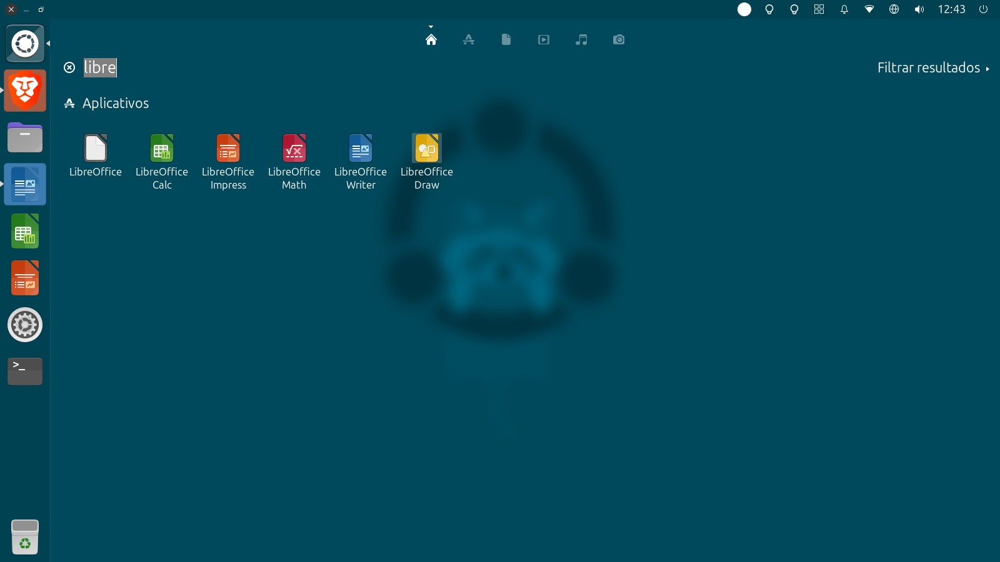

Ubuntu Unity brings back the iconic Unity7 desktop — the same interface millions loved from 2011 to 2017 — now running on a modern Ubuntu base with full Compiz, GTK3, and Unity Tweak Tool support.

From Canonical's bold vision to a community-powered revival.
Unity was first introduced by Canonical in 2010 with Ubuntu 10.10 Netbook Edition, and became the default desktop starting with Ubuntu 11.04 Natty Narwhal. Designed by Mark Shuttleworth and the Canonical design team, it replaced GNOME 2 with a vertically-docked launcher, a global menu bar, the revolutionary Heads-Up Display (HUD), and an integrated dash for searching applications, files, and online sources — all years before similar features appeared in other desktops.
Unity was built on top of Compiz, one of the most powerful compositing window managers on Linux. This gave it smooth animations, desktop effects, and a level of visual polish that was unmatched at the time. The Compiz engine powered wobbly windows, desktop cubes, scale/spread effects, and dozens of plugins that users could configure through CompizConfig Settings Manager (CCSM) or partially through Unity Tweak Tool.
In April 2017, Canonical announced it would stop developing Unity and switch to GNOME 3 for Ubuntu 17.10. The decision left millions of loyal users without their preferred desktop. The same year, UBports took over maintenance of Ubuntu Touch and Unity8, carrying the mobile vision forward. The community refused to let the desktop die — Rudra Saraswat, then 14 years old, stepped up and started the Ubuntu Unity remix. The revival gained momentum through 2020, and Ubuntu Unity became an official flavor in 2022 with the 22.10 release.
Unity debuts in Ubuntu 10.10 Netbook Edition as a new shell for small screens.
Unity becomes the default desktop in Ubuntu 11.04, replacing GNOME 2. The Launcher, Dash, and global menu are introduced.
Unity 2D (Qt-based) introduced for systems without 3D acceleration. HUD (Heads-Up Display) debuts in 12.04 LTS.
Unity7 refined with lens and scope improvements, smart scopes controversy, and Mir display server announced.
Unity8 and Mir debut on Ubuntu Touch. Unity7 continues as desktop default in 14.04 LTS with major performance improvements.
Ubuntu 16.04 LTS ships with a polished Unity7 — considered by many to be the peak of the Unity desktop experience.
Canonical announces Unity discontinuation. Ubuntu 17.10 switches to GNOME. UBports takes over maintenance of Ubuntu Touch and Unity8.
Community revival of Ubuntu Unity gains momentum. Rudra Saraswat's remix grows with contributors and user interest.
Unity8 is rebranded as Lomiri by UBports, continuing its evolution independently.
Ubuntu Unity becomes an official Ubuntu flavor with the 22.10 (Kinetic Kudu) release. A major milestone for the community.
Ubuntu Unity 24.04 LTS (Noble Numbat) ships with continued Unity7 maintenance and updated packages.
Ubuntu Unity 26.04 (Resolute) arrives — treated as LTS by the community with refreshed artwork, HiDPI improvements, and ongoing bug fixes.
The Compiz window manager is the visual powerhouse behind Unity. With CompizConfig Settings Manager (CCSM), you can enable desktop cubes, wobbly windows, scale and spread animations, shift switcher, fire paint, water effects, and over 80 other plugins. But you don't always need CCSM — Unity Tweak Tool also lets you configure several Compiz-powered effects directly: window animations, workspace switching behavior, hot corners that trigger spread or expo, and launcher reveal behavior. It's a friendlier way to tweak Compiz without the risk of breaking your session.
Despite its classic appearance, Ubuntu Unity runs on a completely modern software stack. GTK3 applications render correctly with proper theming through the Yaru-purple theme engine. The underlying Ubuntu base provides Linux kernel 6.x, systemd, PipeWire, NetworkManager, and every modern library and runtime you'd expect from a current Ubuntu release. Snap, Flatpak, and AppImage are all supported out of the box for additional software installation.
Features that were ahead of their time — and still are.
Press Alt and start typing to search any menu action in any application — no mouse required. Want to "Save As" in GIMP? Just type it. Need "Find and Replace" in LibreOffice? The HUD finds it instantly. This feature, unique to Unity, was introduced in 2012 and still has no real equivalent in GNOME, KDE, or any other desktop. It's a command palette for your entire desktop, years before VS Code popularized the concept.
Application menus live in the top panel, not in each window. This saves precious vertical screen space — especially valuable on laptops and widescreen monitors. When an application is focused, its menu (File, Edit, View, etc.) appears in the top bar, maximizing your workspace. This macOS-like approach was controversial at first but became one of Unity's most appreciated features once users adjusted.
The icon-based launcher docked on the left side is Unity's signature element. It provides quick access to pinned and running applications, with badge indicators for unread messages, progress bars for file operations, and quicklists (right-click menus) for app-specific actions. The launcher auto-hides on smaller screens and its size, behavior, transparency, and icon animation style are all configurable through Unity Tweak Tool.
Unity offers a 2x2 workspace grid by default, with easy switching through the workspace switcher or keyboard shortcuts (Super+S for spread, Ctrl+Alt+Arrow for direct switching). Through Unity Tweak Tool you can configure workspace animation styles — the Compiz-powered expo and spread effects. For the full desktop cube, wobbly windows, and other advanced Compiz effects, use CCSM.
Ubuntu Unity ships with the Yaru-purple theme — a variant of Ubuntu's Yaru theme that embraces the deep indigo-purple tones that have been part of Ubuntu's visual DNA since the very beginning. The signature indigo-purple color appears throughout the interface: selected items, toggle switches, progress bars, header bars, and accent elements. Combined with the deep aubergine dark tones, it creates a desktop that is unmistakably Ubuntu Unity.
Ubuntu Unity LTS releases are built on an official Ubuntu LTS base, meaning five years of security updates, kernel updates, and package refreshes from Canonical. The 24.04 release is officially LTS and supported until 2029. Community LTS releases like 26.04 receive 3 years of support from the Ubuntu Unity team. Point releases provide refreshed ISO images so you don't need to download hundreds of updates after installation.
The desktop that defined a generation — now refined for the modern era.



Choose your version and get started in minutes.
The newest release with refreshed artwork, HiDPI improvements, and the latest Unity7 refinements on the Ubuntu 26.04 base.
Download 26.04 ISOThe proven officially-supported LTS release with mature Unity7 support and a well-tested Ubuntu 24.04 base. Latest point release: 24.04.4.
Download 24.04 ISOKeep your system healthy and help us improve.
Security and stability start with updates. Run sudo apt update && sudo apt upgrade regularly, or use the Software Updater GUI. LTS point releases also include hardware enablement stacks (HWE) for newer kernels and X drivers — install them with sudo apt install --install-recommends linux-generic-hwe-24.04.
Found an issue? Your reports directly help improve Ubuntu Unity. For Unity7 code bugs and feature requests, file issues on GitLab. For Ubuntu packaging problems, use Launchpad. Please include your Ubuntu version, Unity7 version, and steps to reproduce.
Ask questions on the Ask Ubuntu Stack Exchange with the ubuntu-unity tag, join the Ubuntu Forums, or visit the Ubuntu Unity Telegram group for real-time help.
Quick answers to common questions about Ubuntu Unity.
sudo apt install compizconfig-settings-manager. Be cautious with CCSM as disabling critical plugins can break your session.Get the most out of your Unity desktop.
Press Alt and start typing to search any menu action. Try "Save As", "Export", or "Find" — the HUD finds it instantly across all menus in the focused application.
Unity Tweak Tool has a dedicated section for Compiz effects: window open/close/minimize animations (choose from fade, scale, glide, and more), workspace switching style, hot corner actions, and launcher reveal behavior.
Install CCSM with sudo apt install compizconfig-settings-manager, then enable "Desktop Cube" and "Rotate Cube" plugins. Disable "Wall" first (they conflict). Now Ctrl+Alt+drag rotates a 3D cube between workspaces.
In Unity Tweak Tool, under Hotcorners, assign actions to each screen corner: show desktop, spread windows, show workspaces, or start the screen saver. A single mouse flick to a corner becomes a powerful shortcut.
The people keeping Unity7 alive and thriving.
Explore topics related to Ubuntu Unity and the desktop ecosystem.